Decouple transport and graph analysis
Kept event movement separate from graph algorithms so ingestion behavior could change without rewriting analytical queries.
Case study 03 / Software + cloud systems
A two-phase distributed pipeline that migrated from Docker to Kubernetes while preserving the query layer and enabling graph analysis during ingestion.
01 / Problem
The system needed to ingest a large source dataset through a streaming architecture, materialize graph data in Neo4j, and support live BFS and PageRank analysis while the stream was still active.
The second phase added an operational constraint: migrate the deployment model from Docker to Kubernetes without changing the query-layer contract.
02 / Architecture
Kafka carried the event stream, Kafka Connect moved data into Neo4j, Kubernetes and Helm managed deployment, and Neo4j GDS supported graph algorithms against the progressively materialized dataset.

The query layer stayed stable across both deployment phases, separating application behavior from infrastructure migration.
03 / Decisions
Kept event movement separate from graph algorithms so ingestion behavior could change without rewriting analytical queries.
Handled movement into Neo4j through a dedicated connector rather than embedding storage concerns inside the producer.
Maintained zero query-layer changes between Docker and Kubernetes phases, providing a concrete test of architectural separation.
Ran BFS and PageRank against the live graph instead of waiting for the pipeline to finish before testing useful behavior.
04 / Outcome
The system processed 3,627,882 source rows, streamed 1,530 Bronx trips into Neo4j, supported graph analysis during ingestion, and earned a 100/100 evaluation.